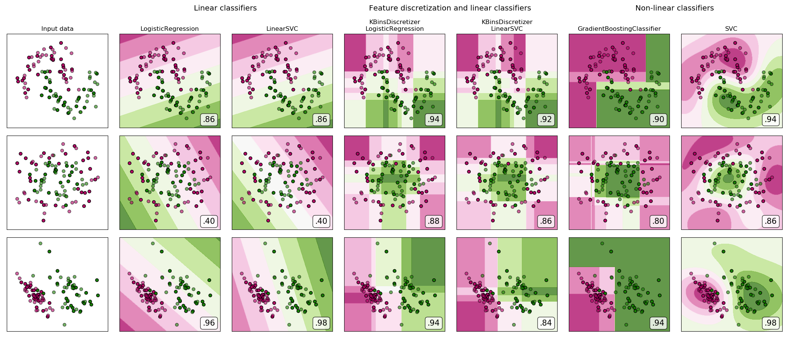
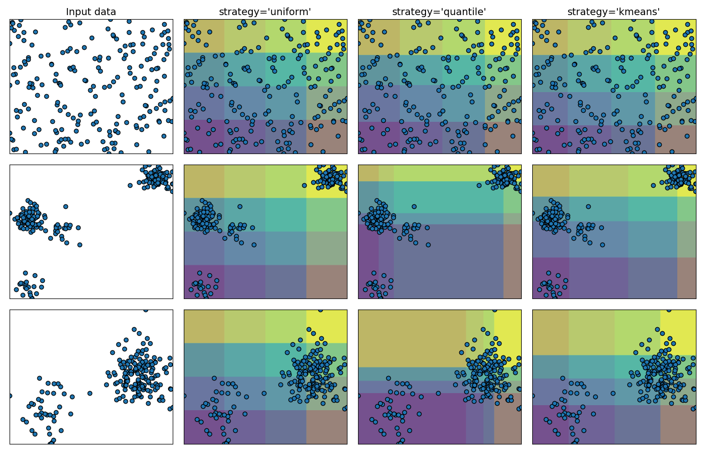
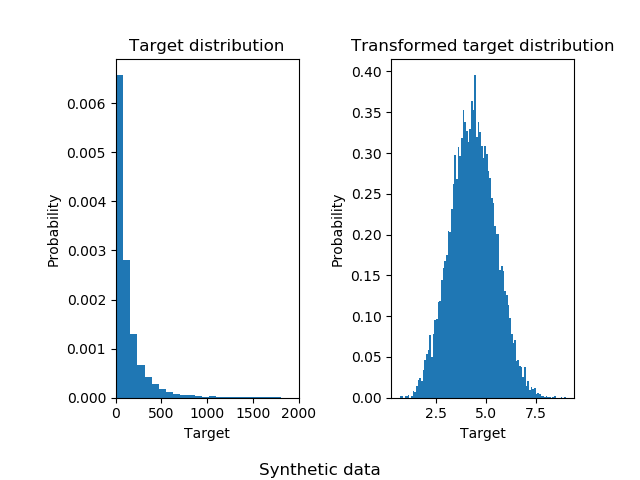
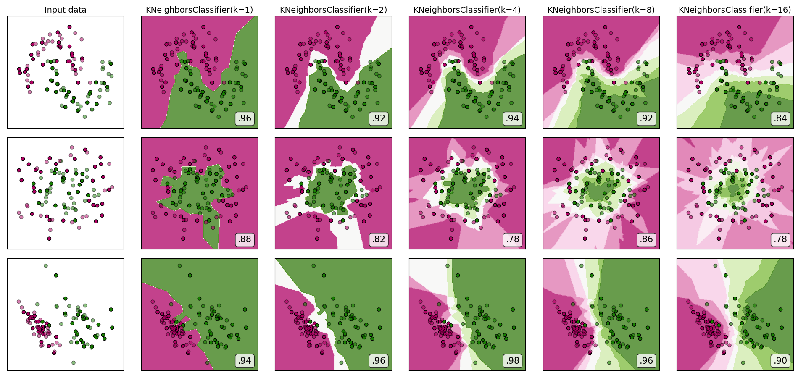
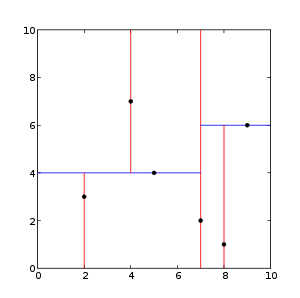
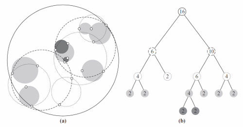
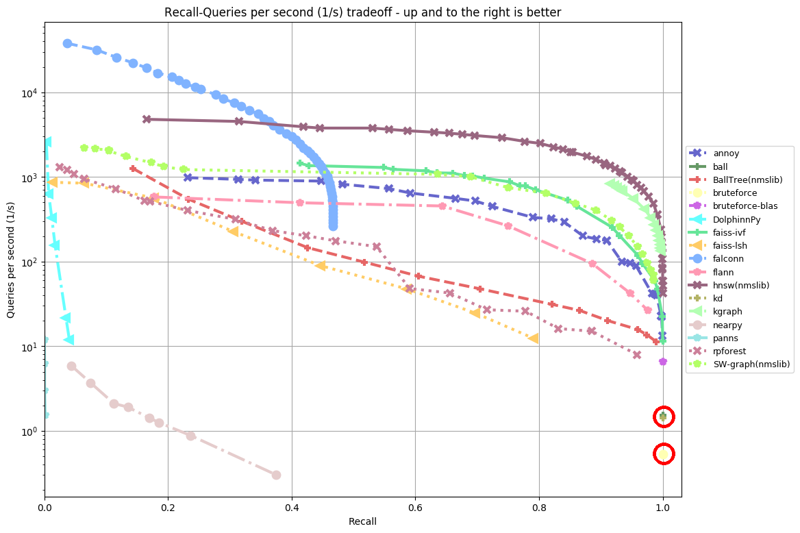

class: center, middle # Transformers in scikit-learn ## - 0.20 and after - Tom Dupré la Tour - PyParis 14/11/2018 .affiliations[   ] <!-- ######################### --> --- class: center, middle # Scikit-learn's Transformers <!-- ######################### --> --- ## Transformer ``` from sklearn.preprocessing import StandardScaler model = StandardScaler() X_train_2 = model.fit(X_train).transform(X_train) X_test_2 = model.transform(X_test) ``` <!-- ######################### --> --- ## Pipeline ``` from sklearn.pipeline import make_pipeline from sklearn.preprocessing import StandardScaler from sklearn.linear_model import SGDClassifier model = make_pipeline(StandardScaler(), SGDClassifier(loss='log')) y_pred = model.fit(X_train, y_train).predict(X_test) ``` <!-- ######################### --> -- ## Advantages - Clear overview of the pipeline - Correct cross-validation - Easy parameter grid-search - Caching intermediate results <!-- ######################### --> --- ## Transformers before v0.20 - Dimensionality reduction: `PCA`, `KernelPCA`, `FastICA`, `NMF`, etc. - Scalers: `StandardScaler`, `MaxAbsScaler`, etc. - Encoders: `OneHotEncoder`, `LabelEncoder`, `MultiLabelBinarizer` - Expansions: `PolynomialFeatures` - Imputation: `Imputer` - Custom 1D transforms: `FunctionTransformer` - Quantiles: `QuantileTransformer` (0.19) - and also: `Binarizer`, `KernelCenterer`, `RBFSampler`, ... <!-- ######################### --> --- class: center, middle # New in v0.20 <!-- ######################### --> --- ## New in v0.20 - `ColumnTransformer` (new) - `PowerTransformer` (new) - `KBinsDiscretizer` (new) - `MissingIndicator` (new) - `SimpleImputer` (new) - `OneHotEncoder` handles categorical string features - `OrdinalEncoder` (new) - `MaxAbsScaler`, `MinMaxScaler`, `RobustScaler`, `StandardScaler`, `PowerTransformer`, and `QuantileTransformer`, handles missing values (NaN). - `TransformedTargetRegressor` (new) <!-- ######################### --> --- class: middle ## `ColumnTransformer` (new) ``` from sklearn.compose import `make_column_transformer` from sklearn.preprocessing import StandardScaler, OneHotEncoder from sklearn.impute import SimpleImputer from sklearn.pipeline import make_pipeline from sklearn.linear_model import LogisticRegression numeric = make_pipeline( SimpleImputer(strategy='median'), StandardScaler()) categorical = make_pipeline( # new: 'constant' strategy, handles strings and pandas categories SimpleImputer(strategy='constant', fill_value='missing'), # new: handle strings and pandas categories OneHotEncoder()) preprocessing = `make_column_transformer`( [(['age', 'fare'], numeric), # continuous features (['sex', 'pclass'], categorical)], # categorical features remainder='drop') model = make_pipeline(preprocessing, LogisticRegression()) ``` <!-- ######################### --> --- class: middle ## `PowerTransformer` <!-- ######################### --> --- class: middle ## `KBinsDiscretizer` .center[] <!-- ######################### --> --- class: middle ## `KBinsDiscretizer` .center[] <!-- ######################### --> --- class: middle ## `PowerTransformer` <!-- ######################### --> --- class: middle ## `TransformedTargetRegressor` ``` import numpy as np from sklearn.linear_model import LinearRegression from sklearn.compose import TransformedTargetRegressor model = TransformedTargetRegressor(LinearRegression(), func=np.log, inverse_func=np.exp) y_pred = model.fit(X_train, y_train).predict(X_test) ``` <!-- ######################### --> --- class: middle ## `TransformedTargetRegressor` .center[] <!-- ######################### --> --- class: middle ## Glossary of Common Terms and API Elements - http://scikit-learn.org/dev/glossary.html <!-- ######################### --> --- class: center, middle # Nearest Neighbors <!-- ######################### --> --- count: false class: center, middle # Nearest Neighbors Classifier .center[] <!-- ######################### --> --- # Nearest Neighbors in scikit-learn ## Used in: - `KNeighborsClassifier`, `RadiusNeighborsClassifier` `KNeighborsRegressor`, `RadiusNeighborsRegressor`, `LocalOutlierFactor` - `TSNE`, `Isomap`, `SpectralEmbedding` - `DBSCAN`, `SpectralClustering` <!-- ######################### --> --- # Nearest Neighbors ## Computed with brute force, `KDTree`, or `BallTree`, ... .center[ ] -- count: false ## ... or with approximated methods (random projections) - annoy (3.5k stars) (Spotify) - faiss (3.7k stars) (Facebook research) - nmslib (0.8k stars) - ... <!-- ######################### --> --- class: center, middle # Nearest Neighbors benchmark .center[https://github.com/erikbern/ann-benchmarks] .center[] <!-- ######################### --> --- class: center, middle # Nearest Neighbors ## - scikit-learn API - <!-- ######################### --> --- ## Trees and wrapping estimator - `KDTree` and `BallTree`: - Not proper scikit-learn estimators - `query`, `query_radius`, which return `(indices, distances)` -- count: false - `NearestNeighbors`: - scikit-learn estimator, but without `transform` or `predict` - `kneighbors`, `radius_neighbors`, which return `(distances, indices)` <!-- ######################### --> --- ## Calling estimators - `KernelDensity`, `NearestNeighbors`: - Create an instance of `BallTree` or `KDTree` -- count: false - `KNeighborsClassifier`, `KNeighborsRegressor`, `RadiusNeighborsClassifier`, `RadiusNeighborsRegressor`, `LocalOutlierFactor` - Inherit `fit` and `kneighbors` (weird) from `NearestNeighbors` -- count: false - `TSNE`, `DBSCAN`, `Isomap`, `LocallyLinearEmbedding`: - Create an instance of `NearestNeighbors` -- count: false - `SpectralClustering`, `SpectralEmbedding`: - Call `kneighbors_graph`, which creates an instance of `NearestNeighbors` <!-- ######################### --> --- ## Copy of NearestNeighbors parameters in each class ``` params = [algorithm, leaf_size, metric, p, metric_params, n_jobs] # sklearn.neighbors NearestNeighbors(n_neighbors, radius, *params) KNeighborsClassifier(n_neighbors, *params) KNeighborsRegressor(n_neighbors, *params) RadiusNeighborsClassifier(radius, *params) RadiusNeighborsRegressor(radius, *params) LocalOutlierFactor(n_neighbors, *params) # sklearn.manifold TSNE(metric) Isomap(n_neighbors, neighbors_algorithm, n_jobs) LocallyLinearEmbedding(n_neighbors, neighbors_algorithm, n_jobs) SpectralEmbedding(n_neighbors, n_jobs) # sklearn.cluster SpectralClustering(n_neighbors, n_jobs) DBSCAN(eps, *params) ``` <!-- ######################### --> --- ## Different handling of precomputed neighbors in `X` - Handle precomputed distance matrices: - `TSNE`, `DBSCAN`, `SpectralEmbedding`, `SpectralClustering`, - `LocalOutlierFactor`, `NearestNeighbors` - `KNeighborsClassifier`, `KNeighborsRegressor`, `RadiusNeighborsClassifier`, `RadiusNeighborsRegressor` - (not `Isomap`) -- count: false - Handle precomputed sparse neighbors graphs: - `DBSCAN`, `SpectralClustering` -- count: false - Handle objects inheriting `NearestNeighbors`: - `LocalOutlierFactor`, `NearestNeighbors` -- count: false - Handle objects inheriting `BallTree`/`KDTree`: - `LocalOutlierFactor`, `NearestNeighbors` - `KNeighborsClassifier`, `KNeighborsRegressor`, `RadiusNeighborsClassifier`, `RadiusNeighborsRegressor` <!-- ######################### --> --- class: middle # Challenges ## Consistent API, avoid copying all parameters, ## Changing the API? difficult without breaking code ## Use approximated nearest neighbors from other libraries <!-- ######################### --> --- class: center, middle # Proposed solution ## Precomputed sparse nearest neighbors graph ### [still under review] <!-- ######################### --> --- ## Precomputed sparse nearest neighbors graph Steps: 1. Make all classes accept precomputed sparse neighbors graph -- count: false 2. Add sparse graph filtering functions -- count: false 3. Pipeline: Add `KNeighborsTransformer` and `RadiusNeighborsTransformer` ``` from sklearn.pipeline import make_pipeline from sklearn.neighbors import KNeighborsTransformer from sklearn.manifold import TSNE graph = KNeighborsTransformer(n_neighbors=n_neighbors, mode='distance', metric=metric) tsne = TSNE(metric='precomputed', method="barnes_hut") model_1 = make_pipeline(graph, tsne, memory='path/to/cache') model_2 = TSNE(metric=metric, method="barnes_hut") ``` <!-- ######################### --> --- ## Precomputed sparse nearest neighbors graph Improvements: 1. All parameters are accessible in the transformer -- count: false 2. Caching properties of the pipeline (`memory="path/to/cache"`) -- count: false 3. Allow custom nearest neighbors estimators ``` # Example: TSNE with AnnoyTransformer: 46.222 sec TSNE with KNeighborsTransformer: 79.842 sec TSNE with internal NearestNeighbors: 79.984 sec ``` <!-- All parameters are accessible in NN estimator, caching properties of the pipeline, custom NN estimator custom NN estimator example --> <!-- other solutions: - object in parameter with query methods #8999 (+) use radius/kneighbors parameters (save time compared to filtering the graph), (+) no need to have a sorted graph, (-) caching and precompute more than necessary, (-) reread #8999 - Give a NN fitted object (pipeline friendly?, wrapper would be weird) --> <!-- ? Show fast filtering (vectorized) for k to lower k? --> <!-- ######################### --> --- class: center, middle, end-slide # Thank you for your attention! tomdlt.github.io/decks/2018_pydata @tomdlt10